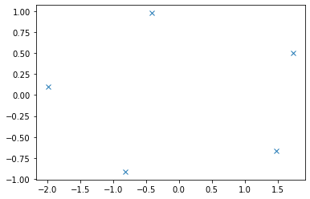

Contents
import numpy as np
npts = 4
tmin, tmax = np.pi/6, 4 * np.pi/3
x0, y0 = 4, -3.5
ap, bp = 7, 3
phi = np.pi / 4
# Get some points on the ellipse (no need to specify the eccentricity).
x, y = get_ellipse_pts((x0, y0, ap, bp, None, phi), npts, tmin, tmax)
noise = 0.1
x += noise * np.random.normal(size=npts)
y += noise * np.random.normal(size=npts)
def get_ellipse_pts(params, npts=100, tmin=0, tmax=2*np.pi):
"""
Return npts points on the ellipse described by the params = x0, y0, ap,
bp, e, phi for values of the parametric variable t between tmin and tmax.
"""
x0, y0, ap, bp, e, phi = params
# A grid of the parametric variable, t.
t = np.linspace(tmin, tmax, npts)
x = x0 + ap * np.cos(t) * np.cos(phi) - bp * np.sin(t) * np.sin(phi)
y = y0 + ap * np.cos(t) * np.sin(phi) + bp * np.sin(t) * np.cos(phi)
return x, y
x,y = get_ellipse_pts((0,0,2,1,None,0), npts=6, tmin=np.pi/6, tmax=np.pi/6+2*np.pi)
x = np.resize(x, x.size -1)
y = np.resize(y, y.size -1)
np.array((x,y)).T
array([[ 1.73205081, 0.5 ],
[-0.41582338, 0.9781476 ],
[-1.98904379, 0.10452846],
[-0.81347329, -0.91354546],
[ 1.48628965, -0.66913061]])
D1=np.vstack([x**2, x*y, y**2]).T
D1
array([[ 3. , 0.8660254 , 0.25 ],
[ 0.17290908, -0.40673664, 0.95677273],
[ 3.9562952 , -0.20791169, 0.0109262 ],
[ 0.66173879, 0.74314483, 0.8345653 ],
[ 2.20905693, -0.9945219 , 0.44773577]])
D2=np.vstack([x,y,np.ones(len(x))]).T
D2
array([[ 1.73205081, 0.5 , 1. ],
[-0.41582338, 0.9781476 , 1. ],
[-1.98904379, 0.10452846, 1. ],
[-0.81347329, -0.91354546, 1. ],
[ 1.48628965, -0.66913061, 1. ]])
S1=D1.T @ D1
S1
array([[ 3.00000000e+01, -1.34754935e-15, 2.50000000e+00],
[-1.34754935e-15, 2.50000000e+00, 4.47301448e-16],
[ 2.50000000e+00, 4.47301448e-16, 1.87500000e+00]])
S2 = D1.T@D2
S2
array([[ 2.82937389e-15, 1.05833698e-15, 1.00000000e+01],
[ 1.15593483e-15, 2.09467978e-17, -1.11022302e-16],
[ 1.58236484e-17, 8.72599320e-17, 2.50000000e+00]])
S3 = D2.T @ D2
S3
array([[ 1.00000000e+01, -1.51566865e-16, 8.88178420e-16],
[-1.51566865e-16, 2.50000000e+00, 2.22044605e-16],
[ 8.88178420e-16, 2.22044605e-16, 5.00000000e+00]])
T = -np.linalg.inv(S3) @ S2.T
T
array([[-1.05301705e-16, -1.15593483e-16, 4.28265561e-17],
[-2.45699108e-16, -8.37871914e-18, 9.50494817e-18],
[-2.00000000e+00, 2.22044605e-17, -5.00000000e-01]])
M = S1 + S2@T
C = np.array(((0, 0, 2), (0, -1, 0), (2, 0, 0)), dtype=float)
M = np.linalg.inv(C)@M
M
array([[-1.25000000e+00, 2.51406300e-16, 3.12500000e-01],
[ 1.12550475e-15, -2.50000000e+00, -5.02812600e-16],
[ 5.00000000e+00, -5.62752373e-16, -1.25000000e+00]])
eigval, eigvec = np.linalg.eig(M)
eigval, eigvec
(array([-2.50000000e+00, -2.77555756e-16, -2.50000000e+00]),
array([[-2.42535625e-01, 2.42535625e-01, -7.09701641e-02],
[ 2.15414908e-16, 2.15414908e-16, -9.56229580e-01],
[ 9.70142500e-01, 9.70142500e-01, 2.83880656e-01]]))
con = 4 * eigvec[0]* eigvec[2] - eigvec[1]**2
ak = eigvec[:, np.nonzero(con > 0)[0]]
con, ak
(array([-0.94117647, 0.94117647, -0.99496324]),
array([[2.42535625e-01],
[2.15414908e-16],
[9.70142500e-01]]))
coeffs = np.concatenate((ak, T @ ak)).ravel()
coeffs
array([ 2.42535625e-01, 2.15414908e-16, 9.70142500e-01, 1.60084474e-17,
-5.03696324e-17, -9.70142500e-01])
cart_to_pol(coeffs)
(-3.300225983504183e-17,
2.5959914359471492e-17,
2.0,
0.9999999999999999,
0.8660254037844386,
3.141592653589793)
import matplotlib.pyplot as plt
plt.plot(x, y, 'x') # given points
#x, y = get_ellipse_pts((x0, y0, ap, bp, None, phi))
#plt.plot(x, y)
plt.show()

coeffs = fit_ellipse(x, y)
coeffs
array([ 0.50620766, -0.69821746, 0.50620766, -6.49342235, 6.33632342,
16.37756323])
def fit_ellipse(x, y):
"""
Fit the coefficients a,b,c,d,e,f, representing an ellipse described by
the formula F(x,y) = ax^2 + bxy + cy^2 + dx + ey + f = 0 to the provided
arrays of data points x=[x1, x2, ..., xn] and y=[y1, y2, ..., yn].
Based on the algorithm of Halir and Flusser, "Numerically stable direct
least squares fitting of ellipses'.
"""
D1 = np.vstack([x**2, x*y, y**2]).T
D2 = np.vstack([x, y, np.ones(len(x))]).T
S1 = D1.T @ D1
S2 = D1.T @ D2
S3 = D2.T @ D2
T = -np.linalg.inv(S3) @ S2.T
M = S1 + S2 @ T
C = np.array(((0, 0, 2), (0, -1, 0), (2, 0, 0)), dtype=float)
M = np.linalg.inv(C) @ M
eigval, eigvec = np.linalg.eig(M)
con = 4 * eigvec[0]* eigvec[2] - eigvec[1]**2
ak = eigvec[:, np.nonzero(con > 0)[0]]
return np.concatenate((ak, T @ ak)).ravel()
np.array((x,y)).T
array([[ 8.94974747e+00, 1.44974747e+00],
[ 8.80523957e+00, 1.57432448e+00],
[ 8.64138268e+00, 1.67846897e+00],
[ 8.45883657e+00, 1.76176160e+00],
[ 8.25833630e+00, 1.82386697e+00],
[ 8.04068921e+00, 1.86453501e+00],
[ 7.80677170e+00, 1.88360195e+00],
[ 7.55752566e+00, 1.88099104e+00],
[ 7.29395471e+00, 1.85671277e+00],
[ 7.01712018e+00, 1.81086491e+00],
[ 6.72813677e+00, 1.74363207e+00],
[ 6.42816811e+00, 1.65528498e+00],
[ 6.11842208e+00, 1.54617937e+00],
[ 5.80014591e+00, 1.41675458e+00],
[ 5.47462118e+00, 1.26753175e+00],
[ 5.14315868e+00, 1.09911176e+00],
[ 4.80709308e+00, 9.12172765e-01],
[ 4.46777760e+00, 7.07467508e-01],
[ 4.12657855e+00, 4.85820266e-01],
[ 3.78486981e+00, 2.48123532e-01],
[ 3.44402733e+00, -4.66557304e-03],
[ 3.10542354e+00, -2.71529156e-01],
[ 2.77042191e+00, -5.51392651e-01],
[ 2.44037135e+00, -8.43129148e-01],
[ 2.11660086e+00, -1.14556393e+00],
[ 1.80041416e+00, -1.45747919e+00],
[ 1.49308441e+00, -1.77761896e+00],
[ 1.19584913e+00, -2.10469415e+00],
[ 9.09905172e-01, -2.43738775e+00],
[ 6.36403936e-01, -2.77436011e+00],
[ 3.76446715e-01, -3.11425436e+00],
[ 1.31080264e-01, -3.45570188e+00],
[-9.87074126e-02, -3.79732777e+00],
[-3.11991041e-01, -4.13775643e+00],
[-5.07911804e-01, -4.47561706e+00],
[-6.85680797e-01, -4.80954923e+00],
[-8.44582207e-01, -5.13820831e+00],
[-9.83976194e-01, -5.46027091e+00],
[-1.10330147e+00, -5.77444018e+00],
[-1.20207755e+00, -6.07945108e+00],
[-1.27990670e+00, -6.37407545e+00],
[-1.33647553e+00, -6.65712693e+00],
[-1.37155625e+00, -6.92746577e+00],
[-1.38500762e+00, -7.18400342e+00],
[-1.37677546e+00, -7.42570688e+00],
[-1.34689292e+00, -7.65160291e+00],
[-1.29548033e+00, -7.86078190e+00],
[-1.22274471e+00, -8.05240156e+00],
[-1.12897895e+00, -8.22569031e+00],
[-1.01456059e+00, -8.37995037e+00],
[-8.79950369e-01, -8.51456059e+00],
[-7.25690310e-01, -8.62897895e+00],
[-5.52401564e-01, -8.72274471e+00],
[-3.60781903e-01, -8.79548033e+00],
[-1.51602913e-01, -8.84689292e+00],
[ 7.42931172e-02, -8.87677546e+00],
[ 3.15996583e-01, -8.88500762e+00],
[ 5.72534231e-01, -8.87155625e+00],
[ 8.42873073e-01, -8.83647553e+00],
[ 1.12592455e+00, -8.77990670e+00],
[ 1.42054892e+00, -8.70207755e+00],
[ 1.72555982e+00, -8.60330147e+00],
[ 2.03972909e+00, -8.48397619e+00],
[ 2.36179169e+00, -8.34458221e+00],
[ 2.69045077e+00, -8.18568080e+00],
[ 3.02438294e+00, -8.00791180e+00],
[ 3.36224357e+00, -7.81199104e+00],
[ 3.70267223e+00, -7.59870741e+00],
[ 4.04429812e+00, -7.36891974e+00],
[ 4.38574564e+00, -7.12355328e+00],
[ 4.72563989e+00, -6.86359606e+00],
[ 5.06261225e+00, -6.59009483e+00],
[ 5.39530585e+00, -6.30415087e+00],
[ 5.72238104e+00, -6.00691559e+00],
[ 6.04252081e+00, -5.69958584e+00],
[ 6.35443607e+00, -5.38339914e+00],
[ 6.65687085e+00, -5.05962865e+00],
[ 6.94860735e+00, -4.72957809e+00],
[ 7.22847084e+00, -4.39457646e+00],
[ 7.49533443e+00, -4.05597267e+00],
[ 7.74812353e+00, -3.71513019e+00],
[ 7.98582027e+00, -3.37342145e+00],
[ 8.20746751e+00, -3.03222240e+00],
[ 8.41217276e+00, -2.69290692e+00],
[ 8.59911176e+00, -2.35684132e+00],
[ 8.76753175e+00, -2.02537882e+00],
[ 8.91675458e+00, -1.69985409e+00],
[ 9.04617937e+00, -1.38157792e+00],
[ 9.15528498e+00, -1.07183189e+00],
[ 9.24363207e+00, -7.71863233e-01],
[ 9.31086491e+00, -4.82879820e-01],
[ 9.35671277e+00, -2.06045285e-01],
[ 9.38099104e+00, 5.75256564e-02],
[ 9.38360195e+00, 3.06771698e-01],
[ 9.36453501e+00, 5.40689214e-01],
[ 9.32386697e+00, 7.58336300e-01],
[ 9.26176160e+00, 9.58836569e-01],
[ 9.17846897e+00, 1.14138268e+00],
[ 9.07432448e+00, 1.30523957e+00],
[ 8.94974747e+00, 1.44974747e+00]])
def cart_to_pol(coeffs):
"""
Convert the cartesian conic coefficients, (a, b, c, d, e, f), to the
ellipse parameters, where F(x, y) = ax^2 + bxy + cy^2 + dx + ey + f = 0.
The returned parameters are x0, y0, ap, bp, e, phi, where (x0, y0) is the
ellipse centre; (ap, bp) are the semi-major and semi-minor axes,
respectively; e is the eccentricity; and phi is the rotation of the semi-
major axis from the x-axis.
"""
# We use the formulas from https://mathworld.wolfram.com/Ellipse.html
# which assumes a cartesian form ax^2 + 2bxy + cy^2 + 2dx + 2fy + g = 0.
# Therefore, rename and scale b, d and f appropriately.
a = coeffs[0]
b = coeffs[1] / 2
c = coeffs[2]
d = coeffs[3] / 2
f = coeffs[4] / 2
g = coeffs[5]
den = b**2 - a*c
if den > 0:
raise ValueError('coeffs do not represent an ellipse: b^2 - 4ac must'
' be negative!')
# The location of the ellipse centre.
x0, y0 = (c*d - b*f) / den, (a*f - b*d) / den
num = 2 * (a*f**2 + c*d**2 + g*b**2 - 2*b*d*f - a*c*g)
fac = np.sqrt((a - c)**2 + 4*b**2)
# The semi-major and semi-minor axis lengths (these are not sorted).
ap = np.sqrt(num / den / (fac - a - c))
bp = np.sqrt(num / den / (-fac - a - c))
# Sort the semi-major and semi-minor axis lengths but keep track of
# the original relative magnitudes of width and height.
width_gt_height = True
if ap < bp:
width_gt_height = False
ap, bp = bp, ap
# The eccentricity.
r = (bp/ap)**2
if r > 1:
r = 1/r
e = np.sqrt(1 - r)
# The angle of anticlockwise rotation of the major-axis from x-axis.
if b == 0:
phi = 0 if a < c else np.pi/2
else:
phi = np.arctan((2.*b) / (a - c)) / 2
if a > c:
phi += np.pi/2
if not width_gt_height:
# Ensure that phi is the angle to rotate to the semi-major axis.
phi += np.pi/2
phi = phi % np.pi
return x0, y0, ap, bp, e, phi
x0, y0, ap, bp, e, phi = cart_to_pol(coeffs)
print('x0, y0, ap, bp, e, phi = ', x0, y0, ap, bp, e, phi)
x0, y0, ap, bp, e, phi = 4.000000000000017 -3.5000000000000004 7.000000000000122 2.999999999999947 0.9035079029052584 0.785398163397452